Tinted artwork, never a CSS
invert()
— the source PNG is black-on-transparent and inverting it skips the brand golds entirely. The N glyph is icon-only (favicon, avatar, stamp) and is never paired at equal weight with the wordmark.